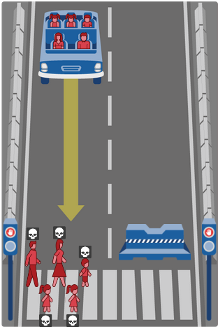

Приближение эпохи автономных автомобилей заставляет СМИ кричать о том, что надо решить якобы существующие связанные с этим моральные проблемы. Однако, в качестве примеров иллюстрирующих эти проблемы приводятся совершенно нереалистичные ситуации, поэтому чтобы понять существует ли проблема нужно сделать небольшой анализ.
Определение в Википедии сообщает, что мораль это «принятые в обществе представления о хорошем и плохом, правильном и неправильном». Однако при обсуждении морали автопилота понятие сужается до вопроса ценности человеческой жизни, а точнее сравнения ценностей разных людей и разного их количества. Т.е. моральным вопросом автопилота считается вопрос: «кого давить?»
Мораль явление субъективное, нет универсальной морали. В исследовании MIT, о котором будет сказано позднее, были обнаружены половые отличия в принятии моральных решений, при этом в эксперименте нет ни расовых, ни национальных, ни религиозных отличий. На мораль конкретного сапиенса оказывает влияние множество факторов, в том числе его национальная и религиозна идентификация, не говоря уже о воспитании. Кого предпочтёт спасти религиозный человек - такого же религиозного или атеиста? Гражданин одной страны кого предпочтёт спасти, если выбор будет между согражданином и гражданином государства с которым его страна воюет?
Моральный выбор это вынужденный выбор между несколькими аморальными деяниями, уровень аморальности которых трудно сравнить. В случае автопилота существование морального выбора требует выполнения следующих условий:
С реалистичностью ситуаций есть большие проблемы, обычно приводят примеры в духе «представьте, что вы идёте по пустыне и вдруг из-за угла танк», т.е. приводят ситуацию, которая якобы есть в данные момент, но не поясняют как она возникла. А если начать разбирать, то оказывается, что ситуация возникнуть не могла - либо скорость должна быть меньше, либо никто на дорогу незаметно выскочить не смог бы и т.д. и т.п.
Условно реалистичной является ситуация описанная в тесте Moral Machine от MIT.

Но и в ней не всё гладко. Во-первых, самый логичный вариант в описанной ситуации это прижаться к ограждению пытаясь погасить скорость, одновременно сигналя, тем самым давая пешеходам время пройти дальше по переходу. Изображённый переход находится либо в городе, где скорость ограничена достаточно сильно, либо на скоростной трассе, где тормозить автопилот должен был начать заранее и узнать что тормоза поломаны. В обоих случаях у него должно быть больше времени на гашение скорости об ограждение и распугивание пешеходов сигналом. Как видим реалистичность ситуации уже рассыпается на глазах. Во-вторых, вся ситуация опирается на отказ тормозов, это и сейчас достаточно редкие ситуации, а никто не мешает повысить надёжность тройным резервированием и сделать самодиагностику так, чтобы машина просто не ехала с неисправностями тормозов.
Чтобы привить автопилоту мораль у него должна быть точная и идентичная человеческой модель мира. Нужно понимание ситуации не худшее чем есть у человека.
Перед законом все равны, а значит применение закона не требует совершения морального выбора. Ещё Макиавелли писал, что для стабильности общества никакие заслуги не должны позволять нарушать закон. Мы не делаем морального выбора когда, например, судим человека за преступление, мы руководствуемся формальной инструкцией - законом. Поэтому автопилот не должен делать морального выбора в сторону нарушения правил. Автопилот должен действовать строго по правилам.
Автопилот - программно-аппаратный комплекс способный управлять транспортным средством так, чтобы доставить его из начальной точки в заданную конечную не спровоцировав аварийных ситуаций. Автопилот по определению это программа, это не искусственный интеллект, не разумная личность, а алгоритм.
В данный момент гугломобили проехали достаточно, чтобы показать, что автопилот может успешно ездить в самых худших для робота условиях - на дорогах построенных для людей и среди водителей-людей. Но такое качество требует оборудования (например лидаров), которое пока дорогова-то, оборудование будет дешеветь, а дорожные условия для роботов будут улучшаться. Знаки, разметка и карты будут адаптированы, а автомобили научатся обмениваться дорожной информацией друг с другом.
Конечно технология новая и ещё не отшлифованная, но это вопрос времени, а значит в ближайшем будущем автономный автомобиль станет привычным явлением.
Создатели автопилота занимаются этим для решения двух задач - снижение стоимости перевозок и повышения их безопасности. Стоимость перевозок это забота предпринимателей, а при обсуждении вопросов морали нас интересует безопасность.
Важно отметить, что речь не идёт о совершенстве, оно, к сожалению, недостижимо, речь не идёт о неуязвимом автопилоте который спасёт пассажиров даже если Луна обрушится на Землю. Речь о том, что автопилот должен быть хотя бы немного лучше чем человек в сфере безопасности. Причём лучше не в среднем, а лучше или не хуже во всех ситуациях. Ведь в теории может быть автопилот который уменьшает смертность на дорогах, но так, что гибнут люди которые никогда бы не пострадали при белковых водителях. Такого быть не должно, автопилот не должен ухудшать чьё-либо положение, снижение смертности не должно происходить за чей-то счёт.
В ситуациях не требующих морального выбора автопилот однозначно выигрывает человека - скорость реакции выше, внимательность и сосредоточенность выше. Автопилот не устаёт, не засыпает, не употребляет наркотики, не болтает и не отвлекается. А ведь главная причина аварий именно эти человеческие дефекты.
С этим вопросом понятно, теперь нужно понять как влияет автопилот на гипотетическую ситуацию в которой есть моральный выбор. Вопрос в том умеют ли люди в аварийной ситуации совершать «правильный» моральный выбор? Боюсь, что нет. Во-первых, аварийные ситуации обычно скоротечны, часто человек просто не успевает осознать происходящее, слышал что самое безопасное место позади водителя (видимо при лобовых столкновениях), потому что тот рефлекторно выворачивает руль так, чтобы самому не врезаться в препятствие т.е. на рассуждения о морали времени нет - работают рефлексы. Во-вторых, часто, чтобы сделать моральный выбор нужно что-то знать о людях между которыми надо выбирать, маловероятно что белковый водитель столкнётся со знакомыми людьми, а если даже встретит, то не факт что в аварийной (скорее всего неожиданной) ситуации он сможет их узнать. В случае же незнакомых людей ему нужно будет сделать какие-то оценки только на основании очень короткого (мгновенного) внешнего осмотра, сможет ли он хотя бы распознать возраст, состояние беременности? Точно он не сможет узнать о заслугах этих людей перед обществом или их преступлениях. И даже если человек успел сделать какой-то выбор, был ли этот выбор верным для него, если он принимал бы аналогичное решение в спокойной обстановке имея время на раздумья принял бы он то же решение?
Конечно без надёжных исследований нельзя утверждать, что человек никогда не принимает моральных решений за рулём, но выглядит это сомнительно, скорее всего человек рефлекторно спасает себя и в этом есть определённый смысл - ведь водитель имеет контроль только над своим авто и решает ту проблему, на которую может влиять.
Для того, чтобы не ухудшить ситуацию в этой сфере (и по ряду других причин описанных ниже) мы должны запрограммировать автопилот так, чтобы ни в каких случаях он не жертвовал своими пассажирами. Помимо указанной особенности человеческого поведения это важно и потому, что просто никто не пожелает пользоваться автомобилем который может тебя убить, при том, что вины пассажиров никакой нет (ведь управляет автопилот, да и правил он не нарушает). Есть ещё один подводный камень автопилота способного пожертвовать пассажиром - зная о такой особенности автопилота можно подстроить убийство пассажира, например, вытолкнув на дорогу в опасном месте несколько человек замаскированных под беременных женщин.
Как видим и в этой гипотетической ситуации автопилот, скорее всего, будет не хуже человека.
Автопилот это машина, которая должна вести себя предсказуемо, тогда ответственность за ущерб лежит на тех кто нарушил правила зная как ведёт себя машина. Если человек сунул руку под гидравлический пресс, то это его вина, также и в случае если он выскочил под едущий автомобиль из кустов. Это касается не только роботов, но и людей - машинист поезда не виноват в том, что кто-то выскочил на пути или гуляет по рельсам, его задача безопасно доставить пассажиров в точку назначения, а не спасать суицидников. Автопилот должен стараться минимизировать ущерб - тормозить, выруливать, но без дополнительных рисков для пассажиров и других участников движения.
Похоже ни о каком моральном выборе при разработке автопилота говорить не имеет смысла.